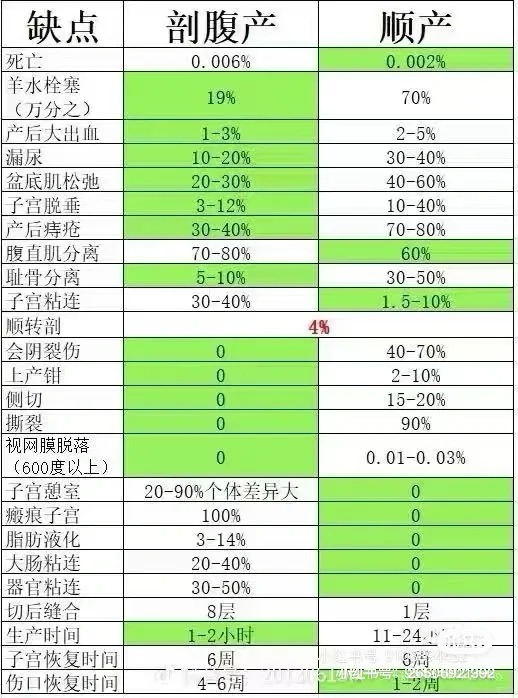
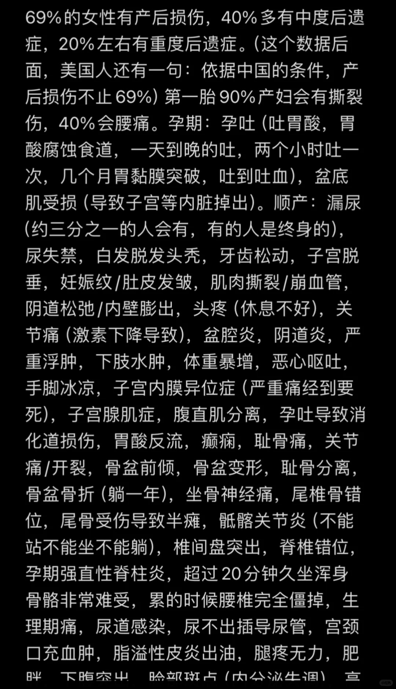
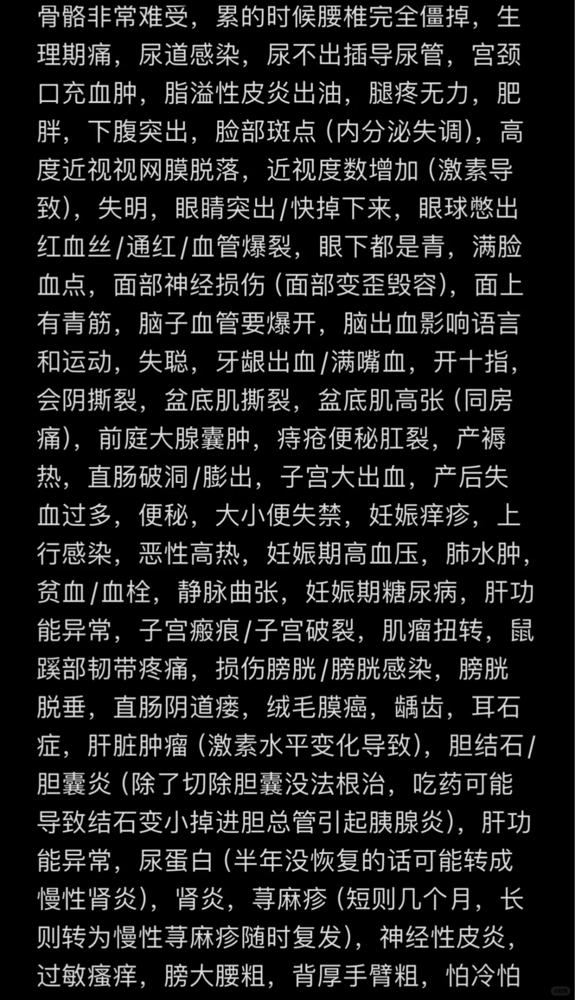
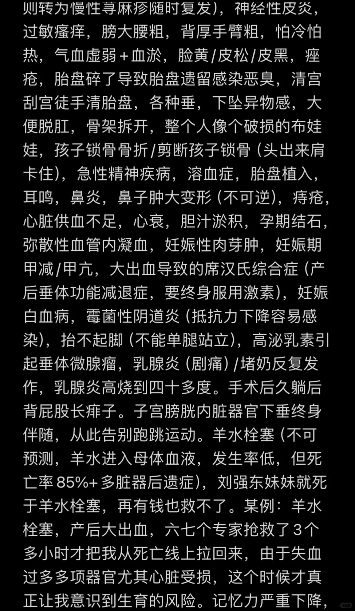
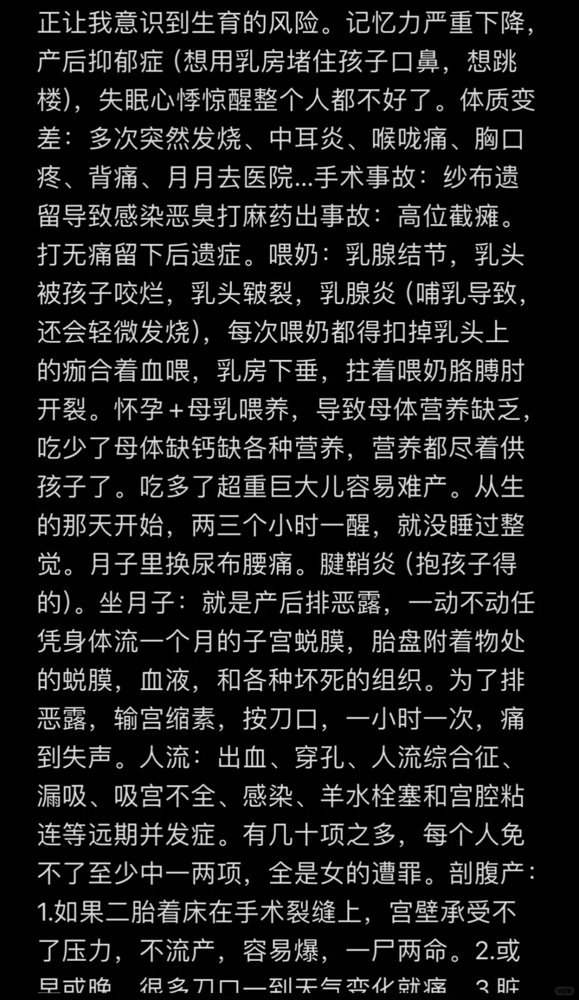
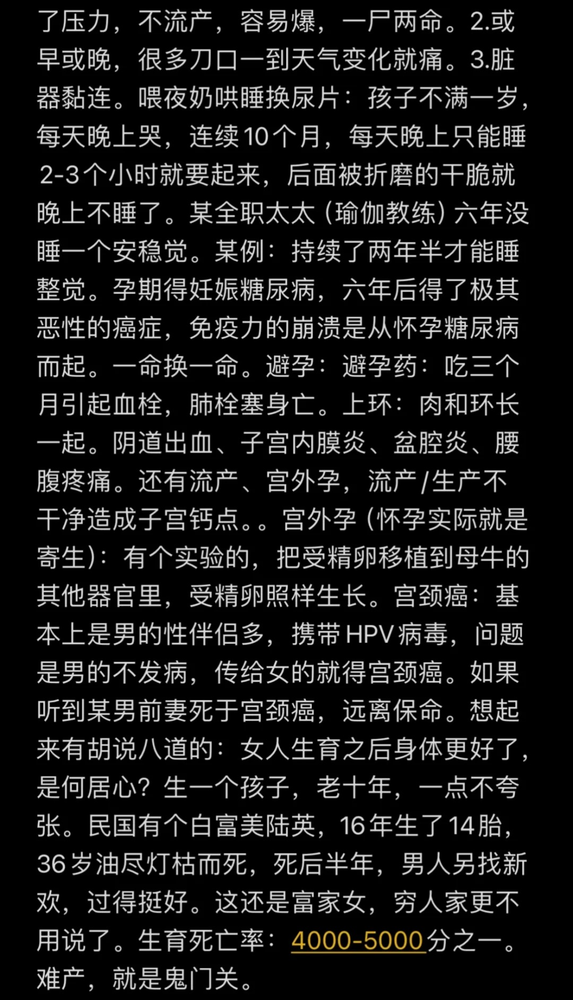
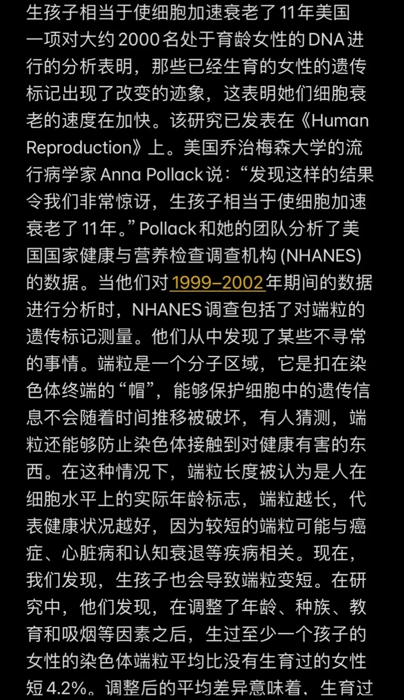
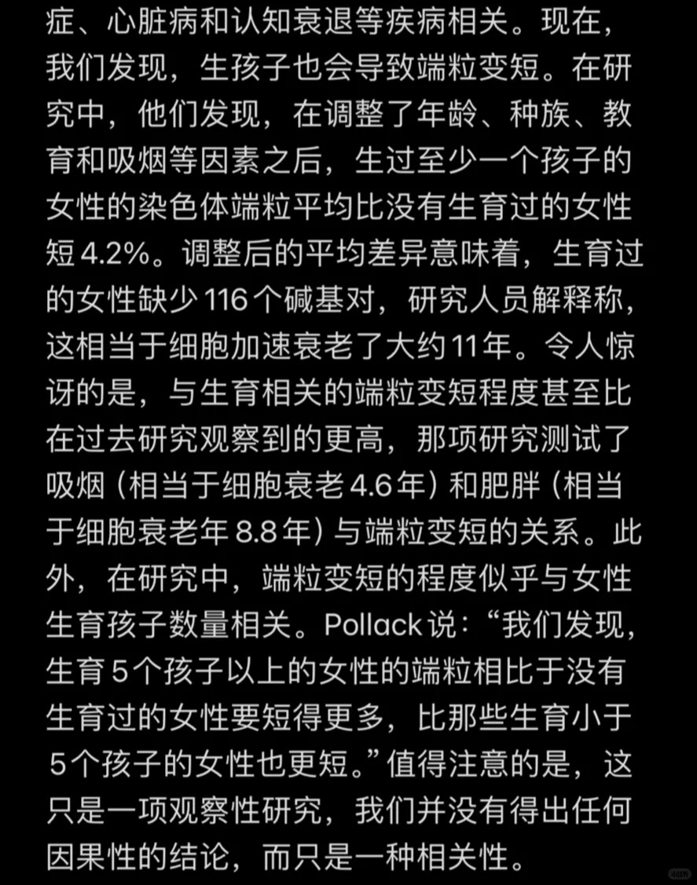

谈谈生育成本值多少钱？
讲讲一个年薪百万的程序员的故事吧。王建国（代号）今年40岁左右，上一段感情有7年，没有孩子。后来他在婚恋网站上认识了一个20岁出头的小姑娘。他贪图别人年轻漂亮、别人贪图他有钱。
我们把这个女人叫做小红吧。小红没有工作、没有钱，她有的只是自己。在她的主动下，她很快就和王建国同居了。在小红的要求下，王建国和她进行了无套性行为，小红很快怀孕了。直到小红和王建国的孩子2岁，王建国依然没有选择和小红领取结婚证。原因一是王建国并不想要和小红分享他年薪百万的婚后财产，原因二是他觉得小红不配（前面也提到了，小红的条件并不好）。如果小红是北上广土著独生女（家产上亿），那王建国早就和小红领取结婚证了。
王建国和小红的关系，逐渐变得很差。据王建国单方面所述，小红是个npd，对他和家人进行家暴。
npd是什么？
Narcissistic Personality Disorder（自恋型人格障碍）
在心理学和精神医学中，NPD 是“自恋型人格障碍”的缩写。这是一种人格障碍，表现为过度的自我关注、缺乏同理心、需要他人赞美等。
家暴图片所下：
他知道翟欣欣的事件，他不想把自己的婚后财产分为小红，但他又想要温柔、能够提供情绪价值、漂亮、年轻，能给他生儿子的女人。
大家都是聪明人。于是小红与王建国开始打官司，目的是争抚养权。因为没有结婚证，小红属于单身生育，女儿的抚养权归母亲所有。
在中国，没有结婚证的情况下，孩子只属于母亲。因为是母亲生的。如果你想问为什么？
那是你没有了解中国的婚姻制度。
中国的婚姻制度，男性是甲方、女性是乙方。男性出钱，女性出力（子宫）。如果在不结婚（不签合同）的情况下，乙方出力，产品归甲方所有（孩子）。那么就不会有乙方选择生产产品了（生育率会进一步暴跌）。
打个比方，我不和你签劳动合同，不给你发工资，但你依然要为我工作。
这时候聪明的男性就会改口“凭什么？我不干”
只有签了劳动合同的情况下，乙方的产品（婴儿）才有可能归甲方所有（抚养权归男方）。
中国生育率已经是全球倒数第二，官方还不想继续冲到榜一。
同理可得，在中国代孕的情况下（虽然违法但依旧存在），孕母拿到钱（生产费），孕母想要孩子，孩子也只归孕母一人。有些男性可能认为，我出几十万，我就可以让其他女人生我的孩子。实际上，（孕母自己想抚养婴儿的情况下）钱归孕母，孩子也归孕母。
在不掺杂感情因素，纯理性地思考。婚姻制度就是一场交易。如果有些人不承认这是交易，那说明他们的感情很好，一旦他们的感情不再了，准备要离婚了。要分割财产的那个瞬间，婚姻的交易本质就会暴露无疑。
中国的社会，一直把生育成本看作是零。而王建国也随大流地认为生育成本是零。所以他才在争取不到孩子抚养权的情况下，撒泼打滚，到处喷网友、喷律师，觉得其他人都是错误的。孩子归他、不给小红抚养费才是正确的。
生育成本真的是零吗
当然不是。王建国和小红的法律官司结果如下，王建国需要付6000/月的抚养费，抚养权归女方。
如果男性错误地、坚持认为生育成本是零，那么他就会遇到麻烦。法律会教他重新做人。
法律为何存在？是因为人们需要法律。是因为遵守法律比践踏法律，对社会的好处要大得多。
杀人判死刑，所以恶人才不敢随便杀人。
我们已经假设了，如果不领结婚证，女方生的孩子，抚养权归男方。生育成本真的为零，会出现什么情况？
假设你上班没有工资，你还会去上班吗？ 不会。
你租房要钱、坐地铁要钱、买汽油要钱、雇佣出租车司机要钱、买食物要钱，为什么认为女人生孩子就应该不要钱呢？
如果你真的认可女人生孩子不应该要钱。那么也应该认为女人就应该不恋爱，拒接所有男性的追求，考证书，提升学历，努力工作，学习语言、移民去对女性友好的地区。
我在学习平台发表这样的言论（选择不结婚、移民），一个非洲的皮肤黝黑的男性说“you are wrong.”
一个54岁的中老年男性情绪激动的说“China is great, you should stay, you can’t immingrat.”
我对于他们的脑回路感到了困惑。你们不是认为女性的生育价值为0吗？那女性不结婚不生育就是应该的呀。
上班不发工资，那就应该不上班呀？
哦，原来他们想要的是奴隶制啊。女人就应该自掏腰包地干活（不是免费干活，因为生孩子也是要钱的）、还做出一副感恩戴德的模样。
恋爱AA制度，男性不愿意给彩礼，男性不想把婚后财产分为女性。我支持啊。但你不能既要又要。
如果你认为生育成本是零。那么就不要追求年轻漂亮的女人，不要生儿子，不要主动给彩礼求女人和你结婚。如果大家都这么认为，那么生育行为很快就会降低到0左右。国家会逐渐被黑人、穆斯林淘汰。
如果你认为生育成本不是零。那么生育成本到底是多少呢？
在王建国的案件中，审判结果是他的女儿每个月抚养费6000元，18年为1296000元。也就是将近130万。小红要求给她100万一次性买断，王建国拒绝了。他想要女儿的抚养权，但是却不认为小红付出了什么生育成本。
孩子是智障的风险
孩子并不是100%出生就是聪明又健康的。哪怕做了产检，孩子依然有可能是智障，或者是残疾人。
如果王建国的女儿是智障、又或是残疾人。这时候王建国又不要孩子的抚养权了。
因此，王建国认为，小红应该100%承担生育风险，他100%承担生育的好处。
女性的健康风险
男性认为，因为生育对他来说没有健康风险，所以女性也应该没有健康风险才对。
女性如果在产后遇到了健康问题，那么属于她个人的问题。
如果女性生孩子死了，那算她倒霉，可不可以退彩礼？
小红应该100%承担健康问题以及后果。男性首先否认生育会带来健康问题，其次让女性闭嘴不要说这个问题。
不说就等于不存在。
既然不存在还讨论什么？
此处列出生育后遗症xx条。








女性的收入因生育而降低
育龄女性是生育的主体。
A:如果不生育，她本来能赚多少钱。
B:生育了，她赚多少钱。
用A减去B，就是她的生育成本。
有一个女工程师，在怀孕前工资为17000，在怀孕后降低到了3000。假设她在三年后找到了17000的工作。她的同事涨工资到了2万。
那么她的生育成本就是
15000123 = 540000
因为这个孩子，她损失的钱为54万以上。而且还没算因为她生育，找不到工作了怎么办，没有算因为她生育，新工作工资不如男同事怎么办。
王建国的第一段婚姻，7年，没有孩子。他年薪100万，就算他的老婆年薪50万。那么为了生这个孩子，他老婆起码要损失150万。
而王建国认为，生育成本为零。从他的角度看，生孩子的确不花一分钱。工资也不会受到任何影响。这也是为什么他的前妻选择不生孩子。
总结
因为中国社会普遍认为生育成本为零，因此他们选择生儿子。
儿子呢，则被迫单身；或者被迫付出高彩礼进入婚姻。
哪怕结婚了，老婆也不生孩子。
中国社会呢，则严重老龄化，发不出退休金。
政府收不上税，就开始加大力度压榨底层。提高社保、提高缴税基数。
社会消费低迷、普遍失业。
等到社会完全承受不住的那一天，只有不劳动的既得利益者生孩子的那一天。中国就亡国了。
我真的很好奇，如何在生育成本为零的情况下，让中国不亡国。把生育率提升到2.1以上。
奇葩的社会造成奇葩的案件。王建国这个事件之所以如此奇葩，就是社会广泛的认为生育成本是由女性完全承担的，当有女性选择用生育来获取金钱报酬的时候，他们就怒不可遏。
不过放宽心，选择用生育来获取金钱报酬的女性真的是少数。他们要感谢这种女性的存在。否则没有妓女，他们就不可能有性生活；没有挟孩子以要抚养费的女人，他们就不可能有孩子。青岛代孕的价格是七八十万。青岛代孕明码标价：95万能选性别
如果所有女人都像王建国的前妻一样，不生孩子。那么中国的生育率立马就会掉到0。中国也会在50年内亡国。中国现在的结婚数量每年掉20%，也许十年内就会掉到100万以下。
也许AA制的男性，最终会选择给挟孩子以要抚养费的女人 一百多万来获得自己的后代吧。
AA男真是搬起石头砸自己的脚，如果选择追求女性、谈恋爱、上交工资卡，还真不需要打官司要抚养权、向下择偶（母亲的基因也会遗传给后代）。
渴望女人和后代是写在基因里的。举例。知乎上择偶焦虑。人如果一生没有结婚，没有性生活，是怎么样的？ - 皕屾的回答 - 知乎
https://www.zhihu.com/question/404967424/answer/3579785423
AA制想省钱最后就是花了更多的钱。王建国想要后代，他说再等下去，孩子成年他都60岁了。他自己也知道，再等下去就绝不可能有后代了。因此要死死攥住不放。